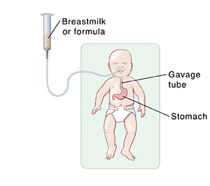
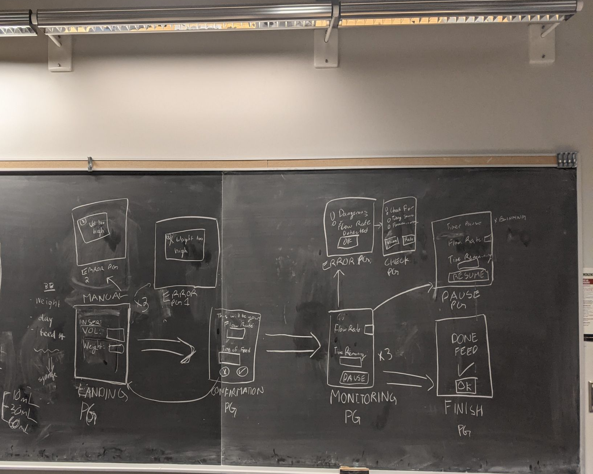
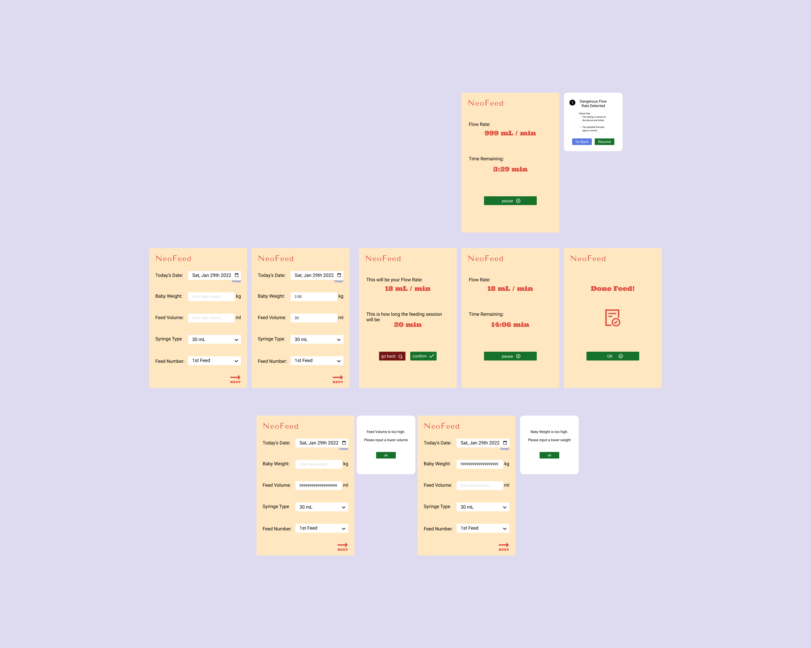
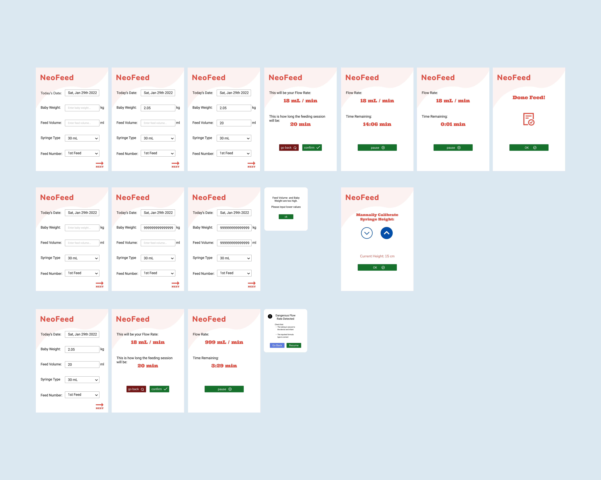
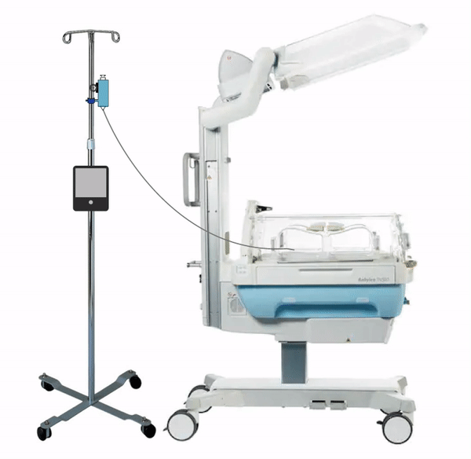
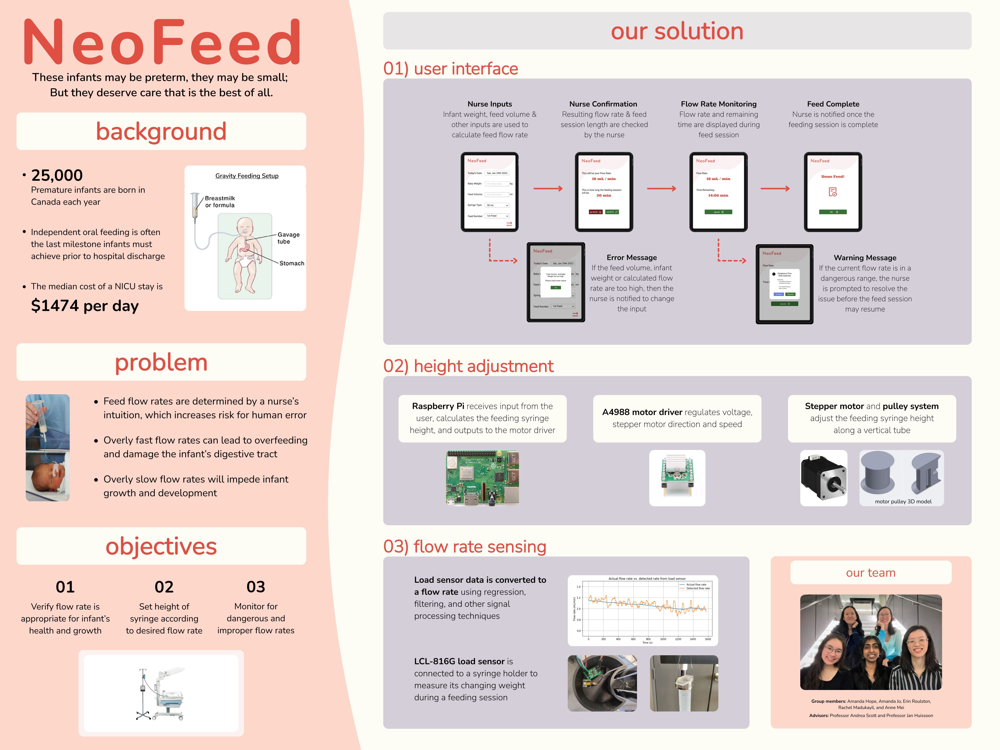

Context: Fourth Year Engineering Design Project (Capstone)
Timeline: Sept. 2020 - Apr. 2022
Tools: Figma, Arduino, HTML, Python, Sensors, Signal Processing
01 BACKGROUND
Nearly 25,000 premature infants are born in Canada each year. These infants are often born without the ability to coordinate sucking, swallowing and respiration and thus require gravity feeds for nutrient attainment. Current gravity feeding protocol in the neonatal intensive care unit (NICU) involves a nurse taping a feed syringe to a wall at heights determined by intuition. This lack of standardization for gravity feeds introduces a risk for human error in setting appropriate feed flow rate. An overly fast flow rate will lead to overfeeding, which damages the infant’s gastrointestinal (GI) tract. A flow rate that is too slow will fail to provide neonates with sufficient nutrition.

The aim of this project is to reduce the reliance on intuition in the current gravity feeding process employed by NICU nurses.
Note: This article will focus mainly on the interface design and implementation. For more information regarding the mechanical, hardware, and pattern recognition aspects of the project, please visit my github at github.com/roulstonerin
02 UI DESIGN
A user walkthrough was quickly drafted to outline the goals of the user and visualize how the application could help achieve these goals.

From this, an initial set of wireframes were made.

Many improvements can be made to this design, such as the logo effectiveness, colour contrast, and user flow. A mood board was created to revise the visual appearance, and a second improved design was created and used in the final iteration.
The interface begins with an input form, where the nurse can input the infant weight, feed day and feed session, following which they are brought to a second input form. Feed volume is pre-populated based on the previously entered parameters but can be adjusted. Nurses select the feed duration and syringe volume, as well as input the vertical height from the device base to the infant.

Then, they are brought to a confirmation page where they are shown their flow rate and can either reject it and readjust parameters, or confirm and proceed. The height of the syringe is then initialized and set, facilitated by the software, mechanical, and hardware components of the device. The nurse is then asked to pour in the feed and plunge the syringe to start flow. Once this is complete, flow rate monitoring begins and continues for the duration of the specified feed session.

At the end of the feed session, nurses are shown a screen indicating that feeding is complete and that the device height will be reset. They can then initiate a new feed should they wish. Error messages were designed for inclusion in the workflow - they arise if a nurse inputs an extreme infant weight, feed day, feed session number, feed volume or distance between baby to device. Nurse action is also requested if the feed flow rate exceeds 2 mL/min - at which point the nurse can either choose to reinitiate the feed at said flow rate or readjust previously entered parameters and start a new feed.

03 USER TESTING
Virtual testing was performed with nurse participants and healthcare practitioners via user walkthroughs and surveys. Feedback was noted and incorporated - i.e. initially we asked nurses to enter feed volume, but during testing some nurses noted that they did not wish to manually calculate feed volume and instead would like to receive a calculated feed volume upon inputting baby weight and feed session number. Additionally, nurses were shown different flow rates and asked to express if they thought they were seeing safe or dangerous flow rates. The data collected from this study revealed that it was beneficial to constantly display feed flow rates to nurses during the feeding session to keep them informed and ensure neonatal safety.
04 IMPLEMENTATION
The Figma prototype was translated into front-end code using HTML5, CSS3, and JavaScript, and the back-end was designed in Python. The front-end code was integrated with a RaspberryPi set-up via Flask. When all the other portions (mechanical, hardware, sensors, signal processing) were integrated, the software application and UX were further tested; Instances where errors could occur - i.e. infant weight beyond 2.5 kg, feed volumes above 50mL etc. would not be accepted, and error messages would accurately be displayed to the user, ultimately reducing the instances of incorrect feed flow rates.